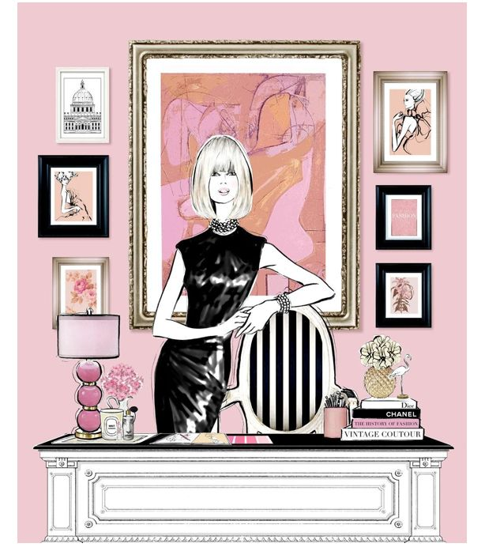

Fashion houses are the heartbeat of the fashion industry, where creativity and business come together.
They're places where tradition meets innovation to create trends that influence the world.
Whether you dream of designing beautiful clothes, shaping brand strategies, or creating unique
retail experiences, working at a fashion house can offer exciting opportunities in cities worldwide.
Working at a fashion house offers many exciting opportunities for people interested in fashion and design. Here are some things a person can do while working at a fashion house:
Working at a fashion house can be demanding but also highly rewarding for those passionate
about fashion and creativity. It offers a chance to contribute to the creation of beautiful
clothes and influence the fashion industry.

Contact
To reach out to fashion houses for job opportunities, start by researching their websites for career sections.
Prepare a professional email introducing yourself, highlighting your skills and passion for fashion.
Request an informational interview or express interest in any available positions. Be polite and concise in your communication.